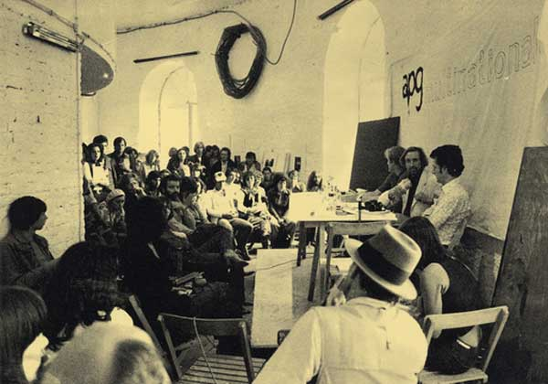
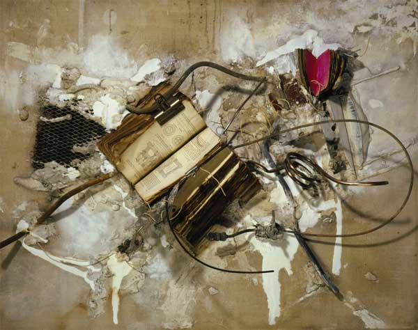

-
The Incidental Person at apex
by Joseph Akel February 18, 2010
Upon entering the current exhibition at apexart, The Incidental Person, one could be forgiven for thinking that he or she has stepped into the offices of some fledgling political action group or non-profit museum dedicated to such causes. The walls are covered with oversized clippings of newsprint and witty slogans of subversion, colored streamers traverse the ceiling and there is a nimiety of wordy pamphlets, giving the overall appearance of revolutionary activity. Indeed, far from any pretense of being an exhibition either of art objects, The Incidental Person is simultaneously a retrospective of the now defunct, influential British Artist Placement Group (APG) and an examination of its legacy on a new generation of hopeful social provocateurs.
Founded by artist couple John Latham and Barbara Steveni in 1966, the APG was among a growing number of 1960’s practitioners who had come to expand upon the previous decade’s interest in “art and technology,” seeing in the two a potential for collaborative relationships between art and industry. For their part, the APG favored a notion that artists would have a far greater effect upon society by working from within the structures of industry, directly effecting systems of production and governance. Thus, the primary task of the APG in the late 60’s involved the placement of its members in various corporate and governmental positions throughout the United Kingdom.
More concerned with social services and the integration of “artists into a participatory role in business matters and decisions making,” the APG committed “to the making of no product, work or idea.” Indeed, this broader movement away from the art object was, at the time, in keeping with Conceptualism’s interest in dematerialization. Latham’s emphatic refusal to give either form or definition to the placement of art appeared as a direct confrontation and critique of a society obsessed with objects and products.
Rejecting not only the classical art object, Latham confronted the traditional perception of the artist as originator, as authorial innovator in the production of works. In one of his most important contributions to the theoretical underpinning of the APG, Latham developed what he referred to as “the incidental person.” A relational paradigm, Latham’s “incidental person” referred to the actions of an artist within the imbricate web of industry, where their impact could be felt and charted over an extended period. Understanding this greater plurality of production roles, the artist was able to transcend any particular sense of individuation and was instead able to identify with a whole host of positions within the web of art making.
And yet, the APG’s true radicalism can be found within the very paradoxes, and potential faults, that lie at the heart of their attempts to reconcile what was both a structural and a theoretical model. Latham’s “incidental person” was at odds with Steveni’s desire to place the artist within various corporate and governmental capacities. For Latham, the artist was to be only one member in a vast network of individuals involved in the process of production, no more or less important than his fellow colleagues. Steveni, however, relied quite deliberately on an outsized view of the artists’ role in contemporary society, privileging the creative vision over others.
That the APG was more interested in social services than in any classically straightforward artistic product was a source of criticism. In an essay written in 1976 for Art-Language, a leading British journal “devoted to dissections of statements about art”, one critic observed that, “artists merely ‘realizing their socialization’ are just people pursuing the pathology of scandal…[for] ideological speculation becomes ideological action only when it generates class conflict and invests in class struggle.” While the extent to which APG’s goals coincided with those of the class struggle more generally is unclear, the fundamental questioning remains valid. With this in mind, we find the apexart exhibition taking its name, and curatorial onus, from Latham’s The Incidental Person in an attempt to account for the APG’s legacy while simultaneously positioning the works of a new generation as successors to the cause. Whether or not the artists exhibited are as successful is still a question to be answered.
In his article for Frieze magazine on the APG, Peter Eleely noted, “of the variety of projects from the last decade or so that have mimicked or inhabited corporate models while also making participation and collaboration” an integral aspect of their process, “Few have achieved APG’s delicately Utopian co-existence of antagonism and service.” In many of the works exhibited here, it is that necessary combination — of service and antagonism — that is least apparent. For her performance, Funds Show, Gianni Motti videotaped herself throwing $6,400 from the balcony overhanging the space in which she was exhibiting. While the commentary on the value and interchange of money is clear, one is left to ponder if the antagonism of a work doesn’t vanish when the actions of the artist are pre-recorded, if a truly peformative element would have been more effective. Here the viewer is left to observe a record of Motti’s performance without any recourse for dialogue or exchange. Other works, including Ariana Jacob’s Documentation of Conversation Station, encourage a more direct interaction with the viewer and thus create a very tangible sense of antagonism. A chalkboard that has “People Die: Let’s Talk About It,” written on it in playful script prompts readers to gather and discuss a topic considered serious. That the results may not necessarily be quantifiable is of little matter, but the work no doubt engenders questions of mortality amongst its viewers. For Jen Delos Reyes’ installation, People Never Notice Anything, the viewer is invited to note observations and thoughts using pencil and paper provided to them. At the end of the exhibition, a group of individuals will be asked to give presentations at the gallery on the recordings left behind. Reyes effectively incorporates the viewer into the creative process and, in so doing, is probably one of the more successful engagements with Latham’s original concept.
Other artists in the exhibition seem far less concerned with the actual motives of the APG, operating instead within modified versions of the group’s original methodologies. Antagonism in such works often emerges from the artists’ attempts to reconcile conflicting beliefs about the traditional art object and their instructional value. Ron Bernstein’s Slide Archive, a compilation of twenty years of travels by the artist’s parents, is one of the more notable works in this respect. Here the images are projected into the gallery space, effectively transforming a public locale into a site of intimate reflection; nostalgia, dislocation and familial reverie cycle through the viewers’ mind, combining the banausic rotation of the slide projector with the pleasures of psychic reminiscences. Keiko Sei’s Video Archive is a compelling series of documentaries highlighting the oppression of Burmese dissidents at the hands of a series of repressive leaders. Like Bernstein, Sei’s videos are a thoughtful meditation on the boundaries between document and art object. Others, however, get caught up in the archival aspect of the work, losing themselves and message within the materiality of their works. In Constance Hockaday’s An Incomplete History of Rafts, the archival leans more towards visual hoarding. Hockaday’s mural of reproduced texts and hand illustrations does less to inform the viewer than to promote a sense both of inundation and informational superfluousness.
For some, it appears that Latham’s interest in the incidental gives license to engage and participate in cross-disciplinary activities, often with a result, however, that is more pataphysics than science. Rapahele Bidault-Waddington’s installation, The Polygon Project at LIID® (Laboritoire d’Ingenierie d’Idess), a walled-off area in which individuals are invited to brainstorm on a variety of esoteric topics, is more likely to illicit frustration with its incomprehensible charts illustrating various aspects of human entropy and thermodynamics.
For others, the interest in commerce and production, a key aspect of APG’s program, informs quasi critiques of the interlocking relationships of art and commerce. The effect, in many cases is more likely to be comical than antagonistic. As its title informs, Art and Beer, serves to unite the two in a result that makes the most vigorous hangover look preferable. Broaching the artist as capitalist, and vice versa, Eric Steen asked Portland micro-brewers to visit a local museum and locate works of art that may be sources of inspiration for new specialty brews. In one of the more memorable wall texts, a brewer notes, “the color, depth, and texture [of said painting]…reminded me of the swirling head on a pint of well poured nitro stout.”
In a further criticism from Art-Language, as relevant then with regards to Latham’s group as it could be today with the Incidental exhibition, a critic observes,
Radical artists produce articles and exhibitions about photos, capitalism, corruption, war, pestilence, trench-foot and issues, possessed by that venal shade of empiricism which guards their proprietorial interests.
What is ultimately missing, as Eleey points out, is a fundamental sense of opposition from within the system. In most instances, the artists attempt to operate outside of the organizations they are targeting, whereas the APG sought to do so through the infrastructure that serves them, essentially operating from an inside-out approach. While the questions asked are worthy, some the methods fall short of the aims. Furthermore, for a show that aligns itself within an ethos of a movement that sought to dematerialize artwork and take it beyond the boundaries and sites of conventional institutions, it is odd to encounter such an exhibition within the confines of the standard white cube, or, for that matter, in New York. As Lucy Lippard, author of Dematerialization of Art stated in an interview with Ursula Meyer in 1973, “One of the important things about the new dematerialized art is that it provides a way of getting the power structure out of New York and spreading it around to wherever.” apexart’s coaptation of the APG’s practices of dematerialization and politicization, along with its move away from the authorial and symbolic roles of the artist makes for an exhibition that raises many fundamental questions concerning art and its role as tool of political and social activism. Many of the works within the Incidental Person embrace aspects of Latham’s original mission, but few seem to reconcile the flaws that led many to criticize the APG or the broader Conceptual art movement as a whole. The most ambitious of these works still leave unanswered those questions left by the APG’s legacy. What and where is the art? What is the social value transmitted by such works, if any? What are the risks with such work? Certainly raising such vital questions about the value and presentation of art remains important, and the apexart exhibition succeeds in doing justice to the provocative legacy of the APG. Whether that legacy is worth revisiting in the first place, however, is more open for debate.

{kind=link}
{kind=link}